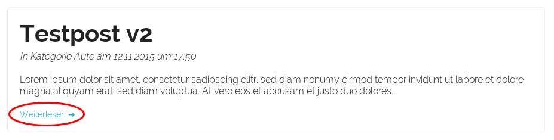
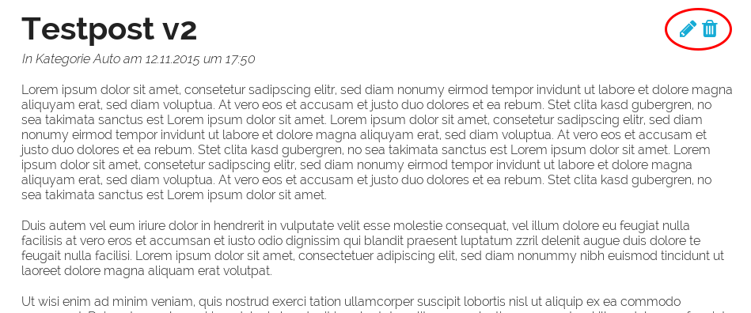
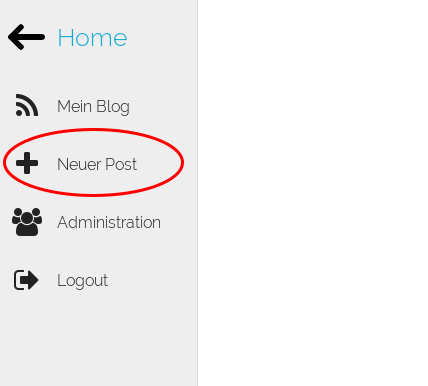
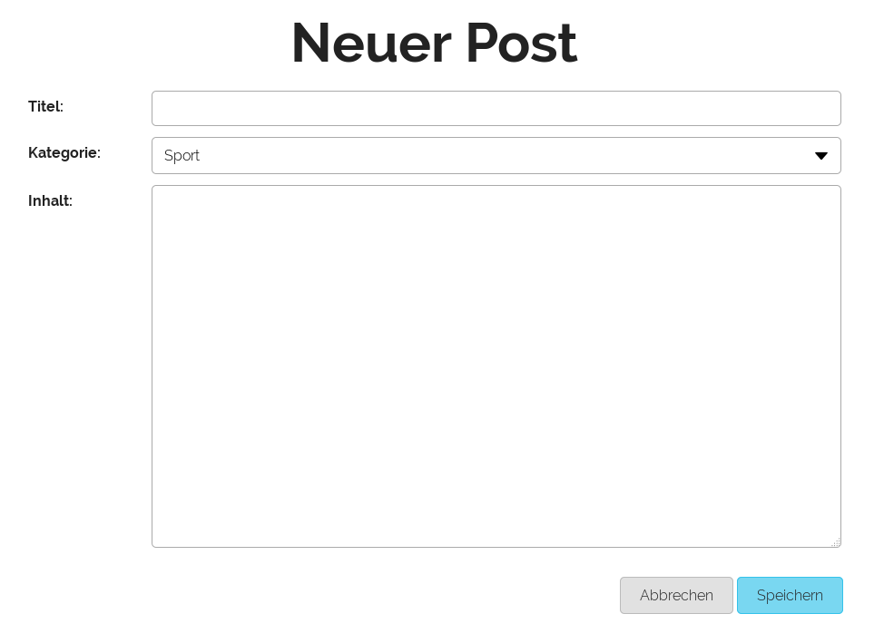

Posts¶
Post anschauen¶

Um einen Post komplett zu lesen, drücken Sie in der Übersicht auf den “weiterlesen”-Link.
Post bearbeiten / löschen / erstellen¶

Um einen Post zu löschen oder zu bearbeiten, drücken Sie das entsprechende Icon. Das passende Formular / der passende Dialog wird danach erscheinen.

Um einen neuen Post zu erstellen, klicken Sie auf den Link im Menu.

Füllen Sie das Formular aus und drücken Sie auf “Speichern”.
Kommentare¶

Um einen Kommentar zu hinterlassen, müssen Sie eingeloggt sein. Füllen Sie den Text aus und drücken Sie auf “Speichern”.